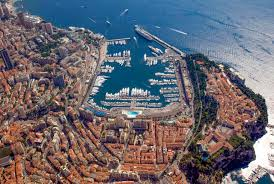
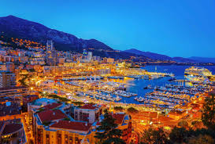
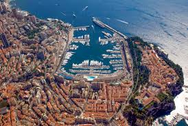
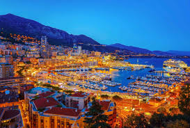

Travel
Monaco
 



About
Geographical location: Europe
Monaco, sovereign principality located along the Mediterranean Sea in the midst of the resort area of the Côte d’Azur (French Riviera). The city of Nice, France, lies 9 miles (15 km) to the west, the Italian border 5 miles (8 km) to the east. Monaco’s tiny territory occupies a set of densely clustered hills and a headland that looks southward over the Mediterranean. Many unusual features, however, have made Monaco among the most luxurious tourist resorts in the world and have given it a fame far exceeding its size.
Many visitors to Monaco alternate their hours between its beaches and boating facilities, its international sports-car races, and its world-famous Place du Casino, the gambling centre in the Monte-Carlo section that made Monte-Carlo an international byword for the extravagant display and reckless dispersal of wealth. The country has a mild Mediterranean climate with annual temperatures averaging 61 °F (16 °C) and with only about 60 days of rainfall. Monthly average temperatures range from 50 °F (10 °C) in January to 75 °F (24 °C) in August.
Monaco’s chief industry is tourism, and its facilities make it one of Europe’s most luxurious resorts. Once a winter attraction, it now draws summer visitors as well to its beaches and expanded mooring facilities. Business conferences are especially important. The social life of Monte-Carlo revolves around the Place du Casino. The casino was built in 1861, and in 1967 its operations were taken over by the principality. Banking and finance and real estate are other important components of the diverse services sector.
Tokyo


About
Geographical location: Asia
Tokyo, city and capital of Tokyo to (metropolis) and of Japan. It is located at the head of Tokyo Bay on the Pacific coast of central Honshu. It is the focus of the vast metropolitan area often called Greater Tokyo, the largest urban and industrial agglomeration in Japan.
The site of Tokyo has been inhabited since ancient times; the small fishing village of Edo existed there for centuries. Edo’s development into a city did not occur until the Tokugawa period (1603–1867), when it became the capital of the Tokugawa shogunate. During this period, however, the imperial family remained in Kyōto, the ancient imperial capital. With the Meiji Restoration of 1868, which ended the shogunate, the capital was moved to Edo. The city was renamed Tokyo, meaning “eastern capital.” Edo had been Japan’s largest city since the 17th century. Tokyo’s population exceeded one million in the late 19th century, and as Japan’s political, economic, and cultural centre it became one of the world’s most populous cities in the 20th century.
The metropolitan area is the largest industrial, commercial, and financial centre in Japan. Many domestic and international financial institutions and other businesses are headquartered in central Tokyo. The city is an important wholesale centre, where goods from all parts of the country and the world are distributed. Tokyo is part of the Keihin Industrial Zone, centred on the western shore of the bay, which has become the country’s leading manufacturing region. Light and labour-intensive industries predominate in the city, notably printing and publishing and the manufacture of electronic equipment.
Tokyo is Japan’s major cultural centre. Displays depicting the art and history of Japan and Asia are featured at the Tokyo National Museum in Ueno Park. Ueno Park is also the site of a science museum, a zoological garden, and two major art museums. Art and science museums are located close to the Imperial Palace, and museums of various types are located elsewhere in the city. Theatrical works, including everything from traditional Kabuki to modern drama, are performed regularly, as are symphonic works, operas, and other Western forms of dance and music. The University of Tokyo heads a long list of major universities and colleges in the metropolitan area.
Patagonia
About
Geographical location: South America
Patagonia, semiarid scrub plateau that covers nearly all of the southern portion of mainland Argentina. With an area of about 260,000 square miles (673,000 square kilometres), it constitutes a vast area of steppe and desert that extends south from latitude 37° to 51° S. It is bounded, approximately, by the Patagonian Andes to the west, the Colorado River to the north (except where the region extends north of the river into the Andean borderlands), the Atlantic Ocean to the east, and the Strait of Magellan to the south; the region south of the strait—Tierra del Fuego, which is divided between Argentina and Chile—also is often included in Patagonia.
The name Patagonia is said to be derived from Patagones, as the Tehuelche Indians, the region’s original inhabitants, were called by 16th-century Spanish explorers. According to one account, Ferdinand Magellan, the Portuguese navigator who led the first European expedition into the area, coined that name because the appearance of the Tehuelche reminded him of Patagon, a dog-headed monster in the 16th-century Spanish romance Amadís of Gaul.
Tourism has become important since the end of World War II, as wildlife reserves and the national parks located along the Patagonian Andes have brought in growing numbers of those seeking recreation. There also has been an increase in scientific study (e.g., glacier research) and in detailed mapping and surveying for mineral exploitation.